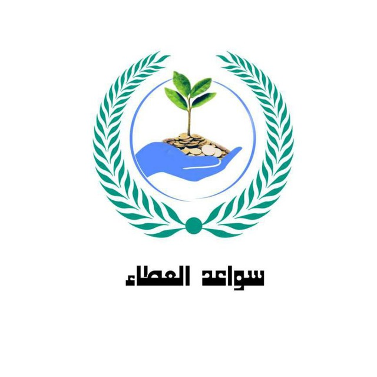
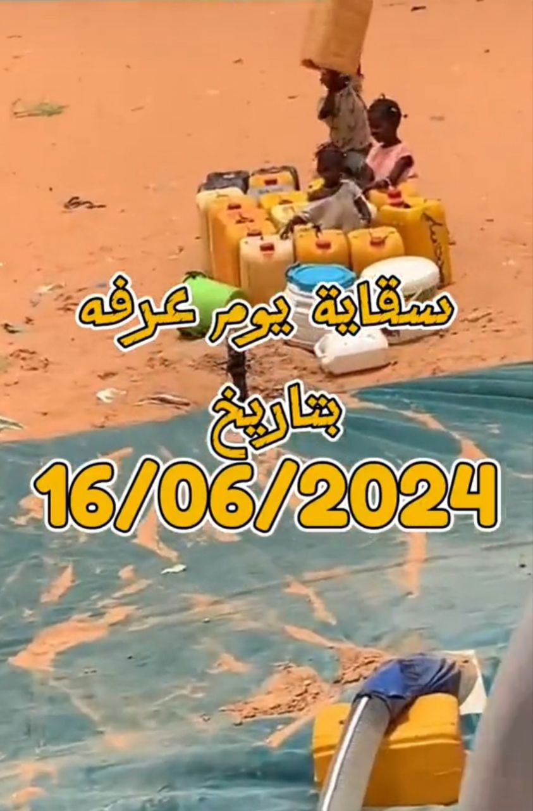
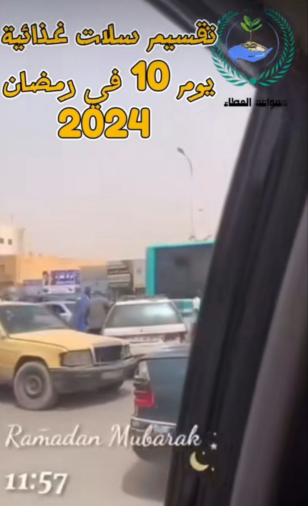
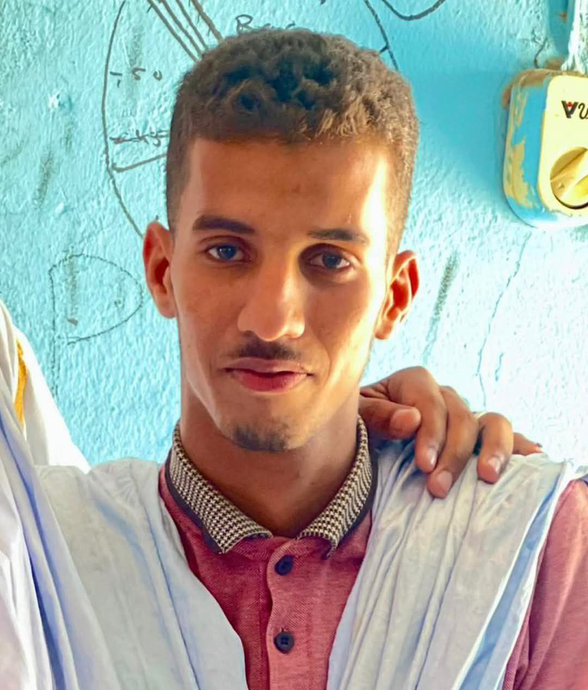
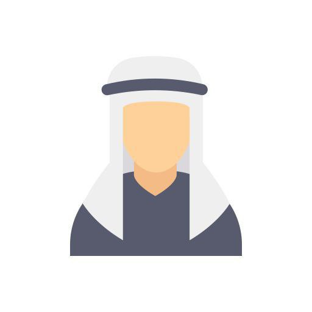

سقاية الماء
توزيع المياه على المناطق التي تعاني من ندرة الماء
إفطار الصائم
توفير سلات غذائية للمحتاجين في رمضان
مساعدة الأسر الفقيرة
تقديم الدعم الغذائي والدواء للأسر المحتاجة

سواعد العطاءأيام
ساعات
دقائق
ثواني
توزيع المياه على المناطق التي تعاني من ندرة الماء
توفير سلات غذائية للمحتاجين في رمضان
تقديم الدعم الغذائي والدواء للأسر المحتاجة


جمع تبرعات أسبوع قبل نهاية كل شهرين لدعم مشروع "قطرة حياة".
بدء جمع التبرعات قبل شهر من رمضان لتحضير سلات غذائية.
إطلاق حملة "فرحة العيد" منتصف رمضان لتوزيع الملابس.
تقديم المساعدات بناءً على البيانات المتوفرة ومراجعتها دورياً.
تقييم المشاريع وتحليل النتائج في نهاية كل شهر.
استعراض الإنجازات وتكريم المتطوعين.

مسؤول تنظيم حملات إفطار الصائمين في رمضان وتوزيع الوجبات على الأسر المحتاجة

مسؤولة عن تنسيق حملات توزيع الملابس للمحتاجين في الأعياد، جمع التبرعات وتحديد العائلات المستحقة.

مسؤول عن بناء العلاقات مع المتبرعين وتنظيم الحملات الإعلامية لزيادة الوعي بأنشطة الجمعية.
مسؤولة عن تنظيم حملات توزيع المساعدات العينية والنقدية للأسر المحتاجة طوال العام.
مسؤول عن تنظيم حملات إفطار الصائمين في رمضان وتوزيع الوجبات على الأسر المحتاجة.
مسؤولة عن إدارة وتنفيذ مشاريع توزيع المياه وتنظيم حملات "قطرة حياة" لتوفير المياه للمحتاجين.
مسؤول التقنية والدعم الإلكتروني: يدير الموقع الإلكتروني ويسهل التبرعات والتسجيل عبر الإنترنت.
شكراً لدعمك! اختر طريقة التبرع المناسبة لك من بين التطبيقات البنكية المتوفرة.